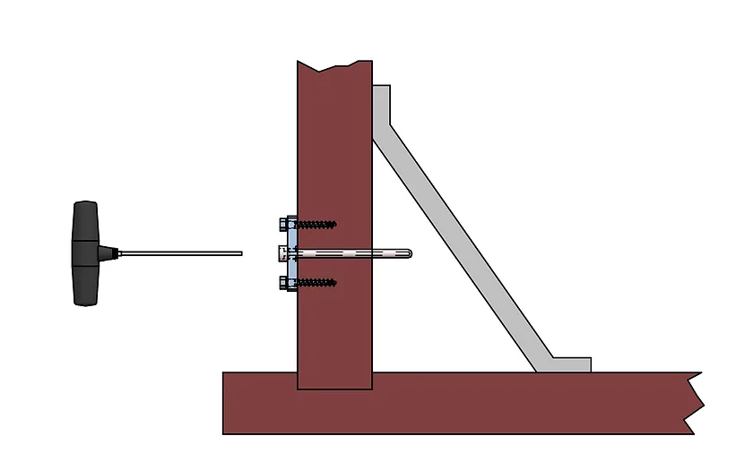
Solution 01
Positioning Sensors
Precise rotational positioning for drum stop and start angles — protects operators, hides and the drive train.
Quality spare parts and complete custom drums for the tannery industry — pins, crown wheels, bronze pinions, brake systems, stainless steel doors, automation and African hardwood, all backed by expert support.
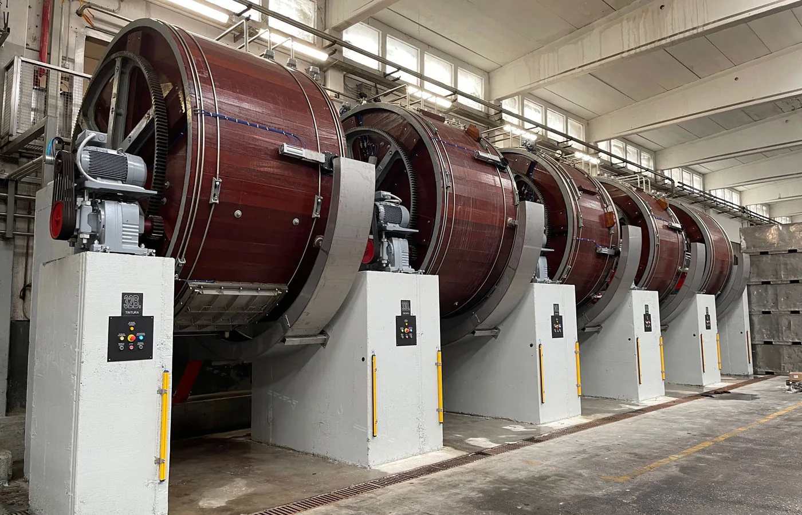
Find everything from pins and crown wheels to bronze pinions and brake disks — full coverage for all major tannery drum brands and generations.
Complete drums designed to meet your unique tannery specifications — capacity, materials, drive, doors and automation built around your process.
Our team is always here to help and find solutions for your needs — from a single spare part to full drum reconditioning projects.
Are you searching for reliable drum spare parts or complete drums tailored to your tannery needs? Kymera Group has you covered. We supply the full range of components used on tannery drums — from structural African hardwood to precision-machined bronze pinions, crown wheels, brakes and the automation that ties everything into a modern, traceable process.
Every wear part, every transmission component, every door and channel — sourced and machined to the standard of demanding daily tannery production.
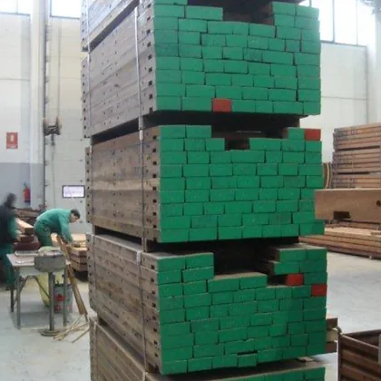
Premium African hardwoods selected for exceptional density and chemical resistance — the structural backbone of professional tannery drums.
Request a Quote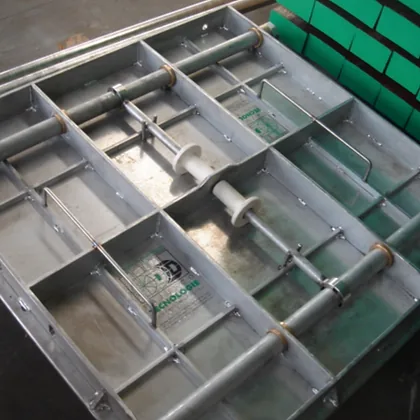
Custom stainless steel drum doors built to your exact dimensions — corrosion resistant, easy to clean, engineered for repeat duty.
Request a Quote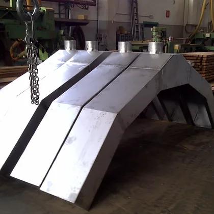
Engineered discharge channels for fast, hygienic and reliable batch unloading — kept the focus on flow and clean transitions.
Request a Quote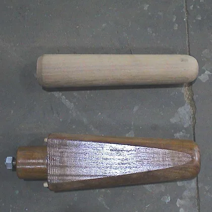
High-strength pins for drum assembly, reconditioning and structural reinforcement — to the dimensions of every major drum standard.
Request a Quote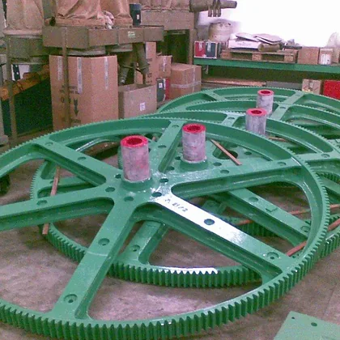
Precision-machined crown wheels for tannery drum drives — built for long-life, low-vibration transmission under continuous load.
Request a Quote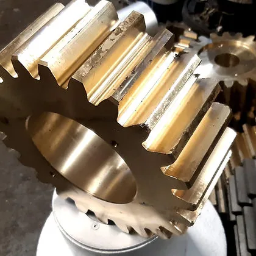
Quiet, wear-resistant bronze pinions for tannery drum gear pairs — drop-in replacements for major drum brands and generations.
Request a Quote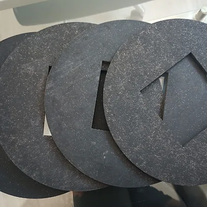
Brake disks for safe, consistent drum stopping under full load — sized and finished to match your drum's drive layout.
Request a Quote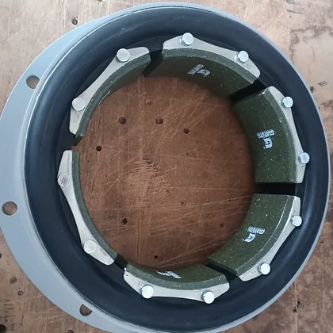
Pneumatic braking systems for safe and accurate drum positioning — reliable performance batch after batch.
Request a Quote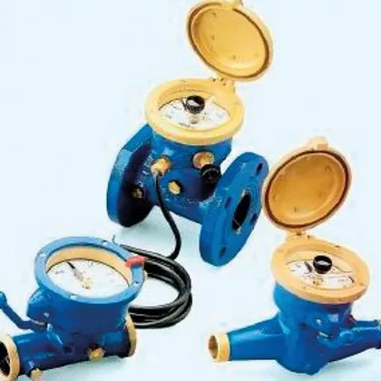
Maddalena liter counters for accurate, traceable water dosing — the proven choice across thousands of tannery installations.
Request a QuoteModern tannery drums earn their cost back through process control. These are the building blocks: precise positioning, accurate water dosing, and real-time temperature data — wirelessly.

Precise rotational positioning for drum stop and start angles — protects operators, hides and the drive train.
Automated water dosing on volume and temperature — repeatable batches, less waste, full traceability across recipes.
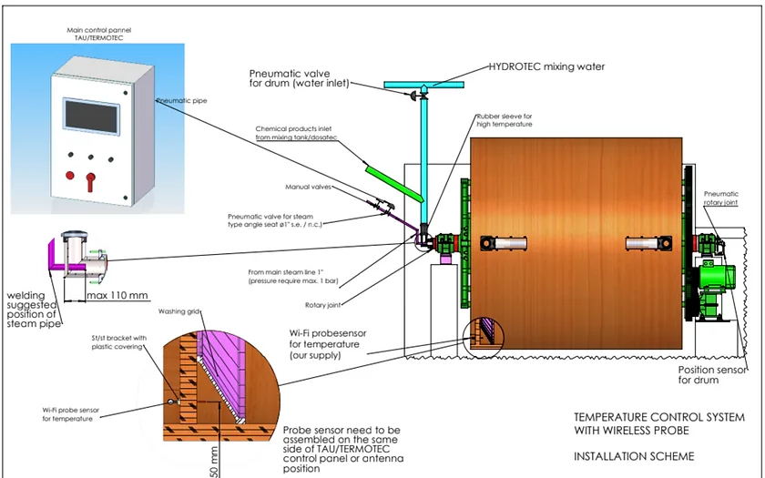
Real-time, wireless temperature monitoring inside the drum — verify your process, log every cycle, troubleshoot fast.
We supply the full range of tannery drum spare parts including pins, crown wheels, bronze pinions, brake disks, pneumatic brakes, stainless steel doors, discharge channels, Azobe and Bolondo wood, and the Maddalena liter counter.
Yes. We design and supply complete drums tailored to your tannery's exact specifications — capacity, materials, doors, drive and automation. Book a meeting with our team to define your project.
Our spare parts fit virtually all tannery drum brands and generations. Share your drum brand, model and any reference numbers and we will confirm compatibility before quoting.
We integrate drum positioning sensors, automated water dosing with the Maddalena liter counter, and wireless temperature probes for real-time process monitoring and traceability.
We use premium African hardwoods — Azobe and Bolondo — selected for their exceptional durability and resistance to the wet, chemically aggressive environment of the tannery drum.
Yes. You can book a face-to-face or online meeting directly with our drum experts to discuss spare parts, reconditioning or complete drum projects.
Click below to schedule your appointment with our drum experts — or send us your enquiry by email and we'll come back to you within one business day.